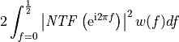
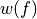

pydsm.NTFdesign.merit_factors.quantization_noise_gain¶
-
pydsm.NTFdesign.merit_factors.quantization_noise_gain(NTF, w=None, bounds=(0, 0.5), avg=False, **options)¶ Compute the NTF quantization noise power gain.
- Parameters
- NTFtuple
NTF definition in zpk or nd form
- wcallable with argument f in [0,1/2] or None or tuple
if function: noise weighting function
if None: no weighting is applied
if filter definition as zpk or ba tuple: weighting is implicitly provided by the filter
- bounds2 elements tuple, optional
the frequency range where the noise gain is computed. Defaults to (0, 0.5)
- avg: bool, optional
If True, rather than returning the overall noise gain, the function returns the average noise gain over the bandwidth.
- Returns
- areal
noise power gain
- Other Parameters
- quad_optsdictionary, optional
Parameters to be passed to the
quadfunction used internally as an integrator. Allowed options areepsabs,epsrel,limit,points. Do not use other options since they could break the integrator in unexpected ways. Defaults can be set by changing the functiondefault_optionsattribute.
See also
scipy.integrate.quadfor the meaning of the integrator parameters.
Notes
The computation is practiced as

Use an on-off weighting function  for multiband evaluation.
In case the weighting function has discontinuities, report them to the integrator via the
quad_pointsparameter.